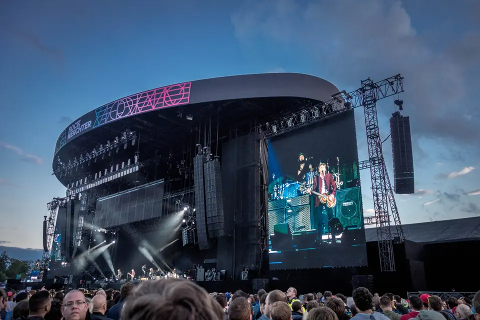

01 · DE KERN
Rock, alternative en art rock
The Beatles vormen een stevig beginpunt, met daaromheen onder anderen R.E.M., Nick Cave, Radiohead, Pixies, David Bowie, The Cure, Pink Floyd, U2, The Rolling Stones, Jimi Hendrix, Creedence Clearwater Revival, The Who, Depeche Mode, Florence + The Machine en Antimatter. Albums tellen, eigenzinnigheid telt en een lied mag best schuren.

